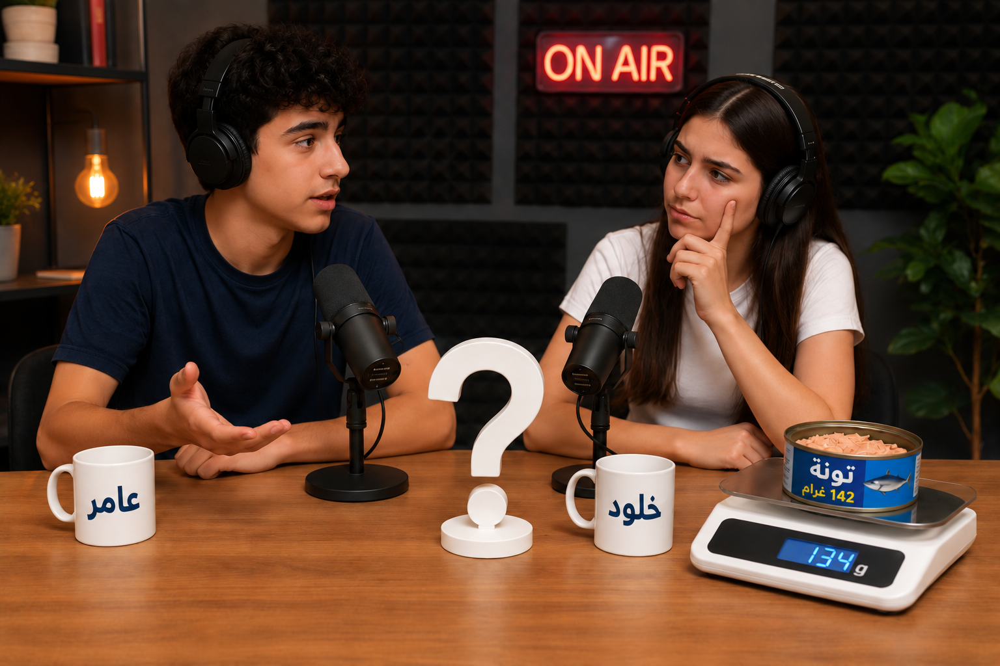
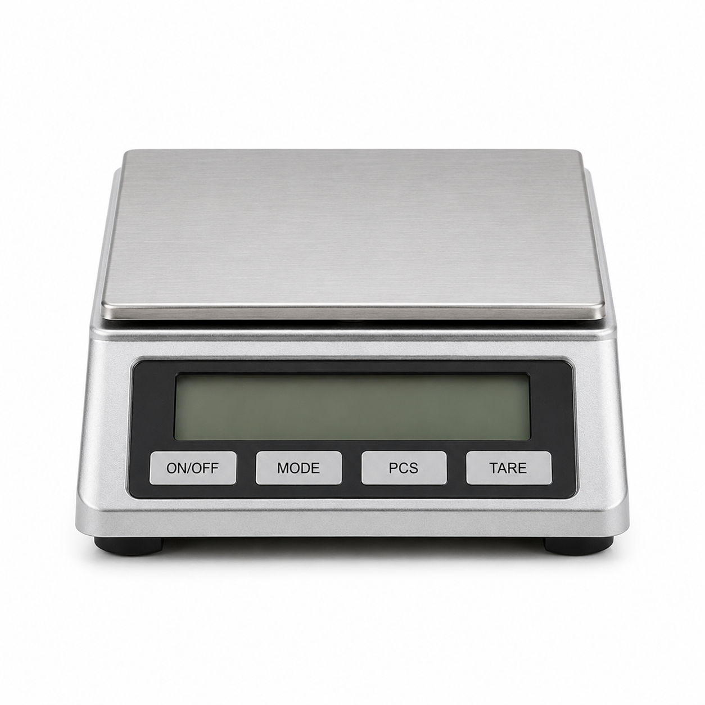
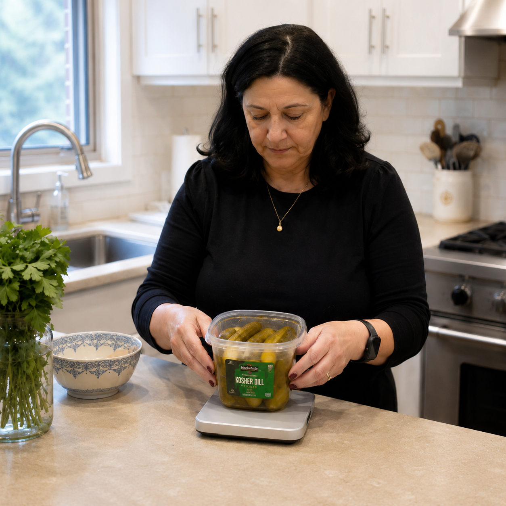
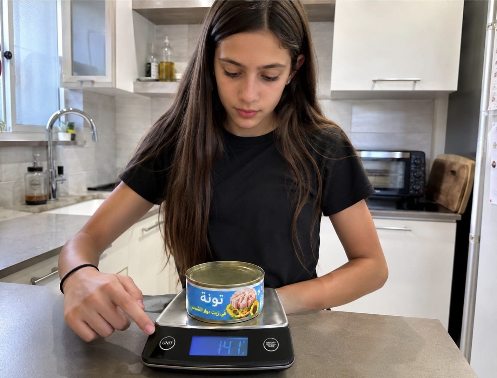
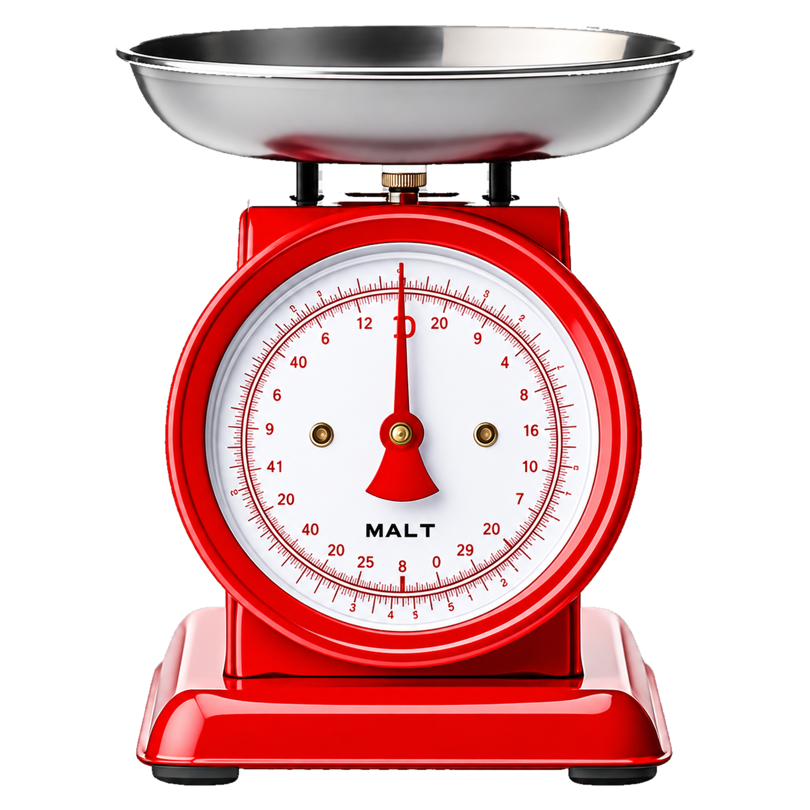
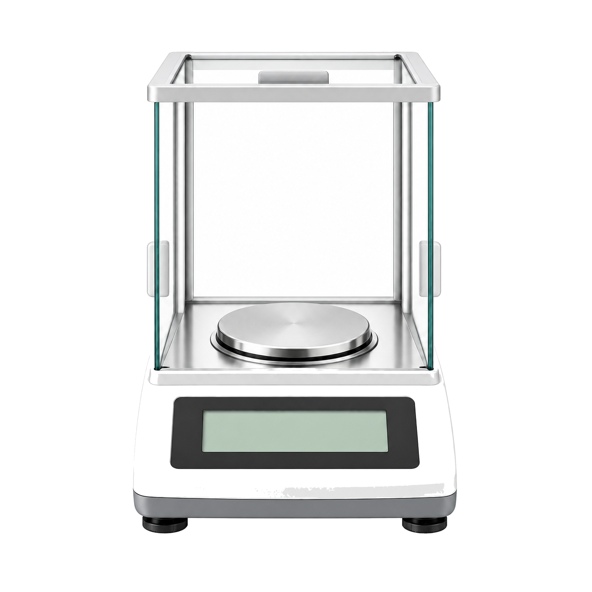
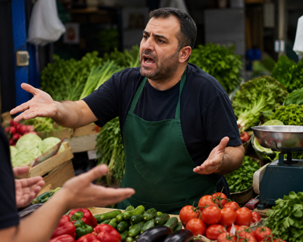
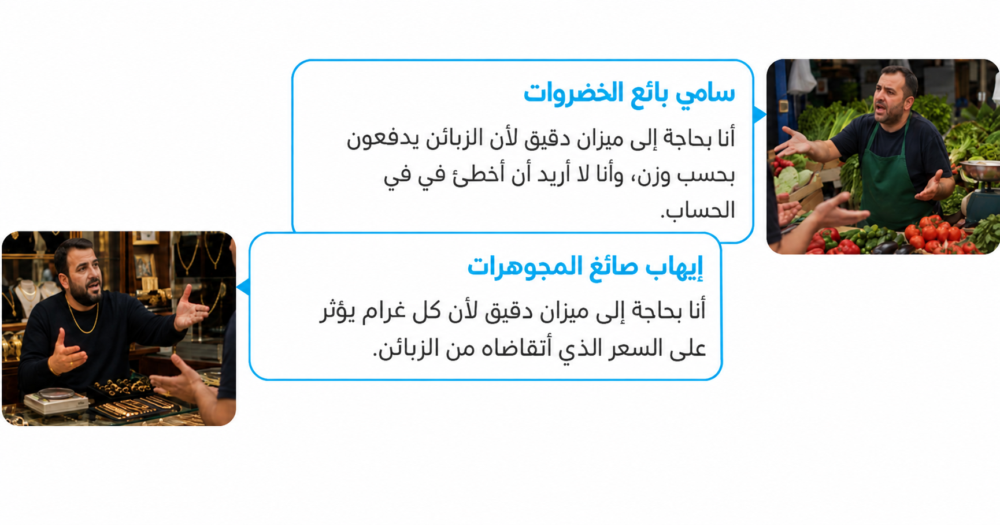

من سيرافقنا في التعلّم؟
اختاروا شخصية
هل 3 غرامات من التونة تساوي 12 مليون دولار؟
استمعوا إلى بودكاست عامر وخلود وأجيبوا بأنفسكم...

ساعدوا عامر وخلود
هل تعتقدون أنّ نقصًا بمقدار 8-3 غرامات في منتج وزنه 142 غرام هو مشكلة خطيرة تستوجب فرض غرامة،
أم أنّه انحراف منطقي ومسموح؟
شكرًا على الإجابة!
استمعوا إلى الجزء التالي من البودكاست واكتشفوا مَن منهما على صواب...
ماذا اكتشفتم؟ هل كانت إجابتكم صحيحة؟
القياسات في الحياة اليومية
اختاروا أحد المجالين التاليين للتعلّم:



الذهب
أمامكم نوعان من الموازين:
ميزان عادي وميزان حساس جدًا.
ضعوا الذهب على كل واحد من الميزانين وسجّلوا الفرق بين القراءتين.

الأدوية
أمامكم نوعان من الموازين:
ميزان عادي وميزان حساس جدًا.
ضعوا الدواء على كل واحد من الميزانين وسجّلوا الفرق بين القراءتين.
القياسات في الحياة اليومية
استمعوا إلى الحلقة التالية من البودكاست واكتشفوا: هل يمكن لانحراف بسيط في القياس أن يُحدِث فرقًا كبيرًا فعلًا؟
انحراف القياس
قال عامر إن حتى الميزان الأدقّ ليس مثاليًا تمامًا.
ما هي أفضل طريقة برأيكم لتقليل تأثير أخطاء القياس العشوائية؟
سؤالان بسيطان للإحماء قبل أن نتقدم

انحراف القياس
قامت السيدة بيكل بقياس وزن عبوة مخللات بواسطة ميزان المطبخ وكتبت في دفترها:
"كتلة العلبة (مع المحتوى الذي بداخلها) هي 400 غرام بالضبط".
أي طريقة علمية استخدمت السيدة بيكل؟

قِسنا وزن علبة تونة 3 مرات وحصلنا على النتائج التالية:
| القياس | النتيجة (لغرام) |
|---|---|
| 1 | 141 |
| 2 | 144 |
| 3 | 141 |
أكملوا الناقص من مخزن الكلمات:
النتائج، وهو 142 غرامًا، يساعدنا على تقليل عدم اليقين والحصول على معطيات موثوقة.
أنهينا مرحلة التعلم، سننتقل إلى التمرين الأول ونجيب عن
5 أسئلة
يجب الإجابة بشكل صحيح عن 4 أسئلة على الأقل.
نحن جزء من مجموعة بحث في الهند تعمل على تطوير مكمّل نموّ نبتة الأرزّ، الذي قد يساعد على تقليل الجوع في الهند( بالنجاح!).
لكي نثبت أن النباتات تنمو، سنقوم خلال البحث بقياس وزن نباتات أرزّ صغيرة حصلت على المكمّل، وأخرى لم تحصل عليه، ثم نقارن بين القياسات.
ستتم القياسات مرة في الأسبوع.
سنحتاج خلال البحث إلى استخدام الميزان الأنسب من بين الإمكانيات التالية:

ميزان مطبخ
مستوى الدقة: 1 غرام

ميزان مختبر
مستوى الدقة" 0.01 غرام (جزء بالمئة من الغرام)

ميزان تحليلي ميزان ذو مستوى دقة عالٍ جدًا. غالبًا ما يحتوي على حجرة زجاجية مغلقة كي لا يؤثر الهواء على القياس.
مستوى الدقة: 0.001 غرام (ميليغرام)

البند أ
عن أي معلومات يجب علينا أن نبحث لكي نختار الميزان المناسب؟
البند ب
وجدنا في المراجع العلمية أن وزن نبتة الأرزّ الصغيرة هو 5 غرام تقريبًا، ومن المتوقع أن تزداد كتلته بـ 0.1 غرام في الأسبوع تقريبًا.
اختاروا الآن الميزان الأنسب للتجربة.
ميزان مطبخ
مستوى الدقة: 1 غرام
ميزان مختبر
مستوى الدقة" 0.01 غرام (جزء بالمئة من الغرام)
ميزان تحليلي ميزان ذو مستوى دقة عالٍ جدًا. غالبًا ما يحتوي على حجرة زجاجية مغلقة كي لا يؤثر الهواء على القياس.
مستوى الدقة: 0.001 غرام (ميليغرام)
تحليل القياسات — هل النتائج موثوقة؟
بدأت التجربة. أضفنا المكمّل إلى شتلة الأرزّ. بعد مرور أسبوع من الرعاية،
قِسنا وزن الشتلة 4 مرات.
أكملوا الفقرة بمساعدة مخزن الكلمات والأعداد:
| رقم تكرار قياس الوزن | النتيجة (بالغرام) |
|---|---|
| 1 | 5.09 |
| 2 | 5.11 |
| 3 | 5.90 |
| 4 | 5.12 |
قاس الكتلة في الواقع
بعد نجاحنا في مشروع الأرزّ، توجّهت إلينا بعض المصانع وطلبت مساعدتنا في اختيار الميزان.
اسحبوا المنتَج إلى الميزان الانسب لقياس وزنه
ميزان مطبخ
مستوى الدقة: 1 غرام
ميزان مختبر
مستوى الدقّة: 0.01 غرام
ميزان تحليلي
مستوى الدقّة: 0.001 غرام
ذهب أم بندورة؟
خلال تجوّلكم في السوق، سمعتم جدالًا بين تاجرَين:

سامي بائع الخضروات
أنا بحاجة إلى ميزان دقيق لأن الزبائن يدفعون بحسب وزن، وأنا لا أريد أن أخطئ في في الحساب.
إيهاب صائغ المجوهرات
أنا بحاجة إلى ميزان دقيق لأن كل غرام يؤثر على السعر الذي أتقاضاه من الزبائن.


احسموا الجدال.
من يحتاج فعلًا إلى الميزان الأدقّ؟

تعلّم وائل في درس العلوم عن القياسات العلمية، وأثار الموضوع اهتمامه كثيرًا.
فقرر مواصلة بحث الموضوع في المنزل وقام بقياس وزن غرضَين:
- سلسلة ذهبي — وزنها الحقيقي 2.3 غرام.
- شمعدان قديم — وزنه الحقيقي 150 غرام.
أُجريَ القياس باستخدام ميزان مطبخ (بدقّة 1 غرام).
في أي غرض سيكون خطأ القياس جوهريًا أكثر، ولماذا؟